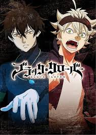
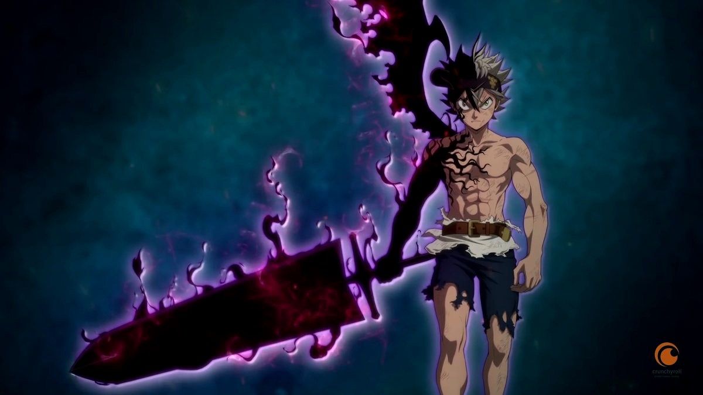

The series focuses on Asta, a young orphan who was raised from birth after being abandoned at the doorstep of an orphanage in Hage village along with his fellow orphan, Yuno. While everyone is born with the ability to utilize Mana in the form of Magical Power (魔力, Maryoku), Asta is the only exception. He tries to gain magical power through physical training. Conversely, Yuno was born as a prodigy with immense magical power and the talent to control wind magic. Motivated by a desire to become the next Wizard King, an authority figure second to the king of Clover Kingdom, the two youths developed a friendly rivalry. Yuno obtains a legendary four-leaf grimoire held by the kingdom's first Wizard King. Asta, despite his lack of magic, obtained the mysterious five-leaf grimoire (which cannot be clearly identified by others since it is worn out), which contains mysterious elf swords and rare anti-magic. Afterward, he and Yuno each join a Magic Knight squad as the first step to fulfill their ambitions. Throughout the story Asta and Yuno embark on various adventures, as they make a name for themselves throughout the Clover Kingdom. Both characters strive to one day hold the title of Wizard King.
An original video animation produced by Xebec Zwei that is based on the series was shown at the 2016 Jump Festa between November 27 and December 18, 2016.[17][18][19] It was bundled with the 11th volume of the manga, which was released on May 2, 2017.[20] A second original video animation was shown at the 2018 Jump Festa.[21] It was later released on DVD releases alongside My Hero Academia and Food Wars! Shokugeki no Soma bundled with the future volumes of their respective manga, as it was announced on Jump Special Anime Festa event.[22] At the Black Clover Jump Festa event on December 18, 2016, an anime television series adaptation by Pierrot was announced.[20] It is directed by Tatsuya Yoshihara, with Kazuyuki Fudeyasu writing scripts, Itsuko Takeda doing character designs, and Minako Seki composing the music.[23] The series premiered on October 3, 2017,[24][25] with the first two seasons each consisted of 51 episodes.[26][27] Season 3 premiered on October 1, 2019.[28] Crunchyroll is simulcasting the series,[29] while Funimation is producing an English dub as part of its Simuldub program as it airs.[30][31] Adult Swim's Toonami programming block premiered the English dub on December 2, 2017.[32] Sony Pictures UK and Funimation released the first part of the series on home video in the United Kingdom and Ireland,[33] with subsequent parts released by Manga Entertainment.[34] Universal Sony classified the first part of the series for release in Australia and New Zealand, on behalf of Funimation,[35] with Madman Entertainment releasing subsequent parts.[36]
imagen mamalona